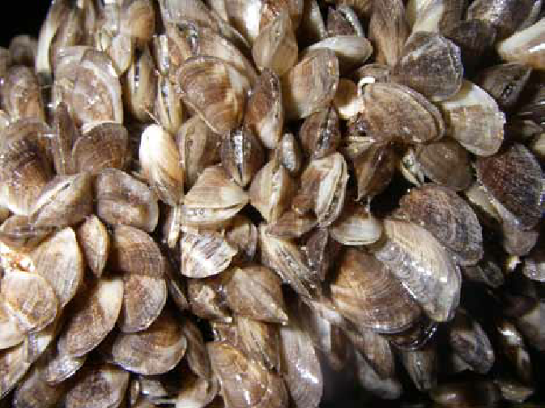
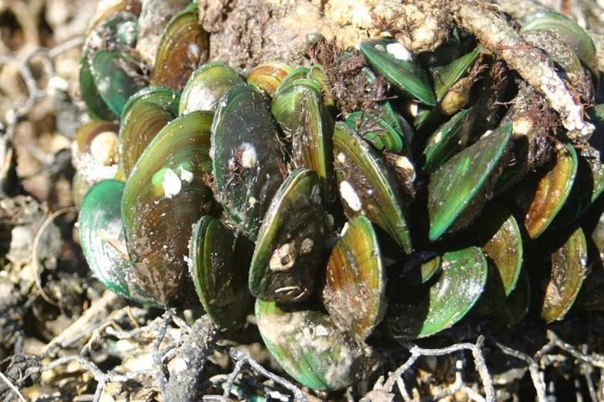

⚠️ CLASS A/B — Prevent Re-Introduction
Darwin 1999 Eradication
CLASS A/BBlack-striped False Mussel
Mytilopsis sallei
CLASS A/B - Eradicated 1999
- Small — only 20-25mm
- Dark radiating stripes on shell
- Prefers brackish/estuarine water
- Packs in thick dense layers
- $2.2M eradication in Darwin!
CRITICAL HISTORY: 1999 Darwin marinas treated with copper/chlorine. Report ANY striped mussels immediately — sea chests are highest risk!

CLASS A/BAsian Green Mussel
Perna viridis
CLASS A/B - Tropical Threat
- Young = bright emerald green
- Older = brownish-green
- Big — 80-165mm (hand-sized)
- Blue-green iridescent inside
- NT waters IDEAL for this pest!
Don't confuse with: Native tropical mussels — check for GREEN colour!
CLASS A/B — Report Immediately
Page 1 of 3 CLASS A/B
CLASS A/B
Asian Paddle Crab
Charybdis japonica
CLASS A/B - White Spot Risk
- Paddle-shaped back legs
- 6 spines either side of eyes
- 5 spines on each claw
- Up to 120mm carapace
- Carries White Spot Virus!
Critical: White Spot would devastate NT prawn industry. Report ANY swimming crabs in sea chests!
 CLASS A/B
CLASS A/B
Charru Mussel
Mytella strigata
CLASS A/B - Tropical
- Medium 22-50mm
- Variable exterior: black, brown, orange
- Blue-purple interior — distinctive giveaway
- Yellowish flesh — key ID feature
- Open shell to confirm ID
ID tip: Internal colour + yellowish flesh are the most reliable features. See NIMPIS for reference photos.


.jpg)